Gaussian parcel PINN
2D carrier flow · demo preset · independent reference audit
Further numerical or model assessment required
Numerical verification: 9/10. Literature validation: 0/51.
Predictions from incomplete training remain diagnostic results. For 2D, the channel depth view is an extruded illustration.
Metrics and status · Literature audit · Run configuration · Scientific report
Coupled PINN
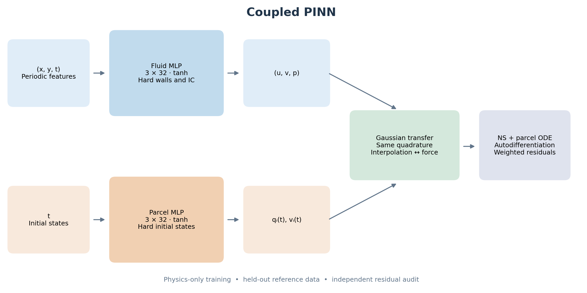
Two separate fully connected tanh networks, both with 3 hidden layers of width 32. Trainable outputs are coupled through normalized Gaussian quadrature; reference arrays are used only after training.
PNG · PDF · SVG
Stokes response
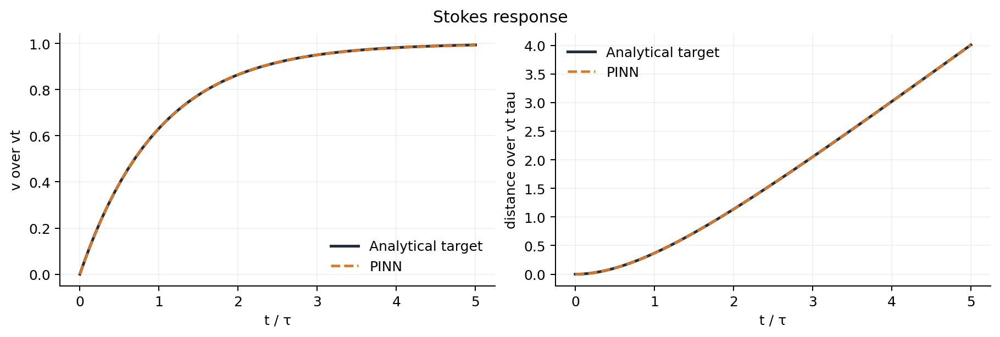
V01: independent reduced-model verification. Analytical targets were excluded from PINN training. Errors and acceptance criteria are in verification.json; a plot is not a pass verdict.
PNG · PDF · SVG
Momentum exchange
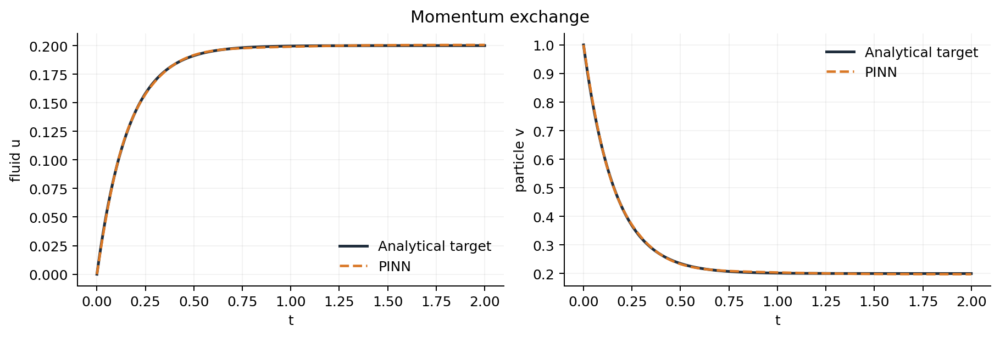
V02: independent reduced-model verification. Analytical targets were excluded from PINN training. Errors and acceptance criteria are in verification.json; a plot is not a pass verdict.
PNG · PDF · SVG
Gaussian overlap
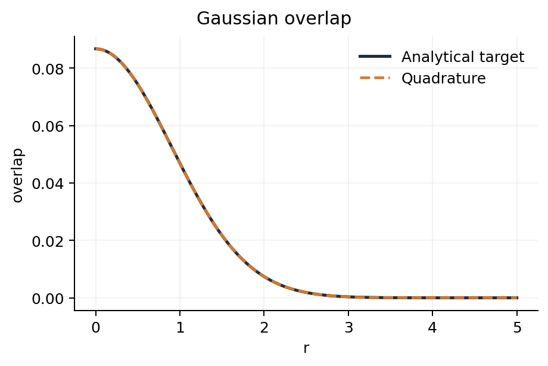
V04: independent reduced-model verification. Analytical targets were excluded from PINN training. Errors and acceptance criteria are in verification.json; a plot is not a pass verdict.
PNG · PDF · SVG
Taylor–Green flow
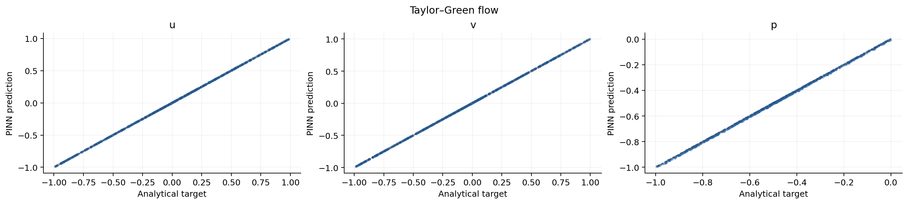
V10: independent reduced-model verification. Analytical targets were excluded from PINN training. Errors and acceptance criteria are in verification.json; a plot is not a pass verdict.
PNG · PDF · SVG
Verification overview
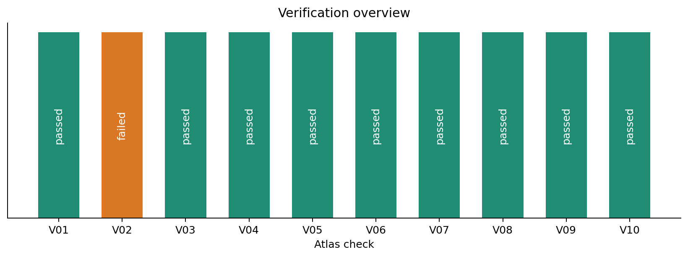
Pass/fail classifications are implementation checks using declared project tolerances. They do not certify the 51 literature benchmarks.
PNG · PDF · SVG
Training history
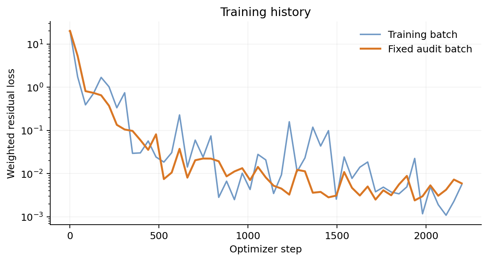
baseline_seed7: no smoothing or loss truncation beyond the positive logarithmic floor. Checkpoint uses minimum fixed-audit loss.
PNG · PDF · SVG
Flow fields
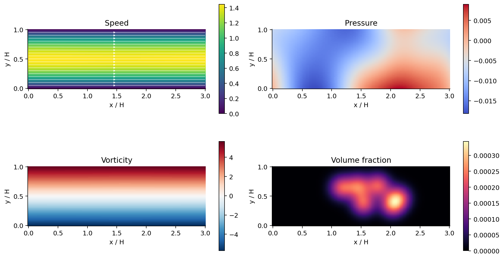
baseline_seed7: direct PINN fields at t=1. Vorticity computed by plotting-grid differences. Uncertainty and residuals must be checked before quantitative interpretation.
PNG · PDF · SVG
Channel profile
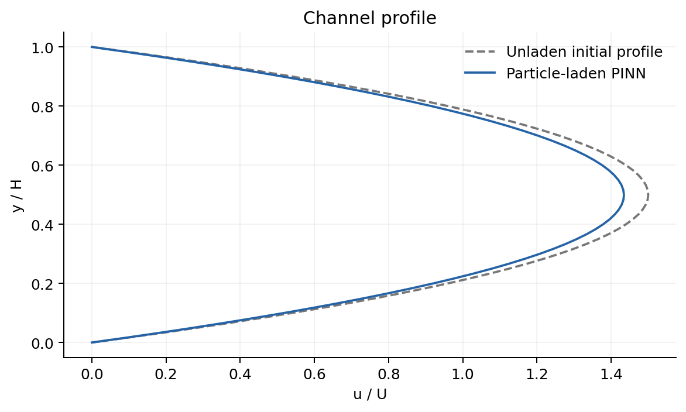
baseline_seed7: final profile at channel midpoint. The dashed initial unladen profile is not a two-way validation target.
PNG · PDF · SVG
Parcel paths
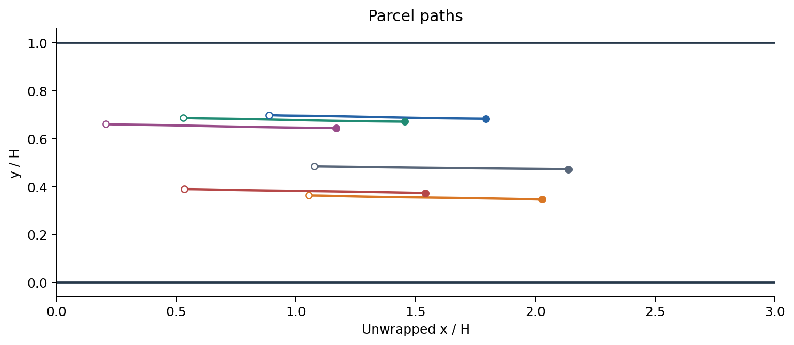
baseline_seed7: direct PINN parcel trajectories; open markers denote initial states and filled markers denote final states. No boundary clipping is applied.
PNG · PDF · SVG
Channel view
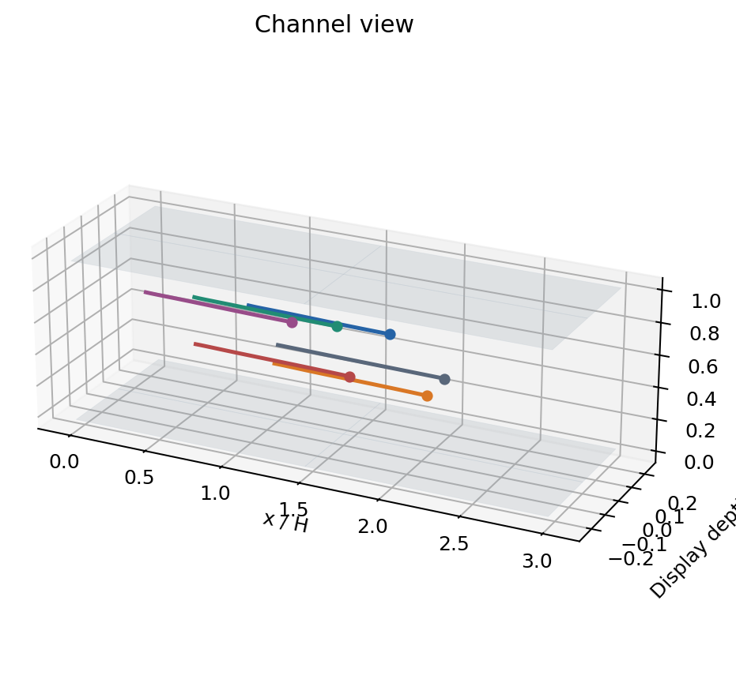
baseline_seed7: extruded illustration of a 2D solution; every particle has z=0. Display depth contains no solved physics.
PNG · PDF · SVG
Parcel velocities
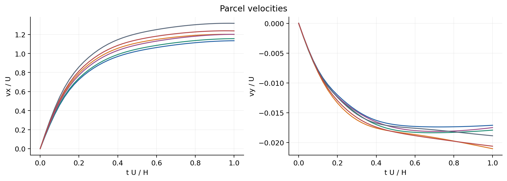
baseline_seed7: PINN velocity outputs. Kinematic consistency with position derivatives is audited separately.
PNG · PDF · SVG
Conservation diagnostics
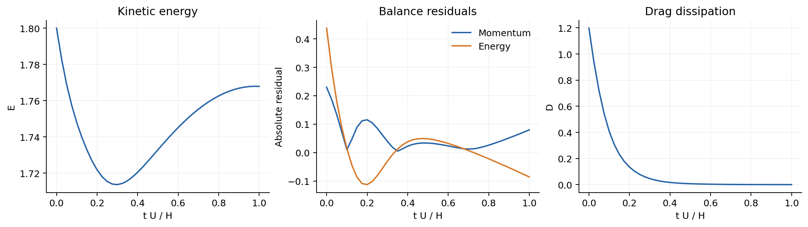
baseline_seed7: driven channel includes wall viscous and pressure tractions, body force and particle gravity. Total momentum and energy need not be constant. Quadrature errors enter global balances. Contact cases omit unsupported global balances.
PNG · PDF · SVG
Parcel transport
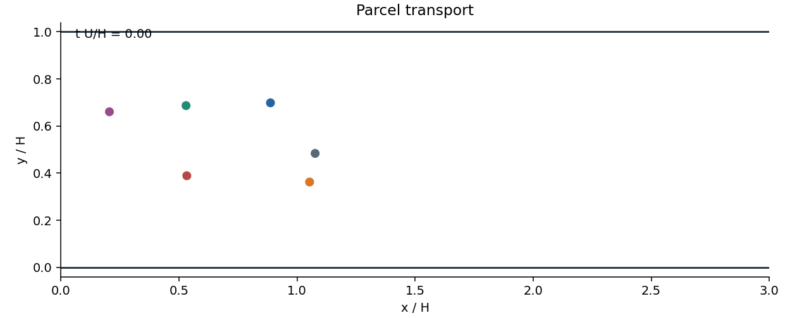
baseline_seed7: PINN positions, periodic wrapping in x. Marker sizes are illustrative, not physical radii.
GIF · MP4
Parameter effects
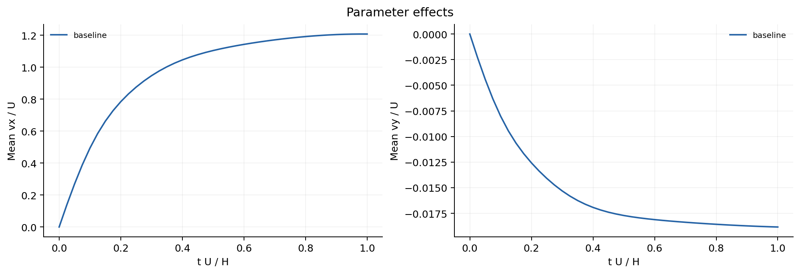
Parcel-mean velocities by case. Multiple-seed shading, when present, is ±1 sample standard deviation; it is not a confidence bound or a discretization error estimate.
PNG · PDF · SVG